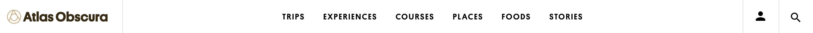
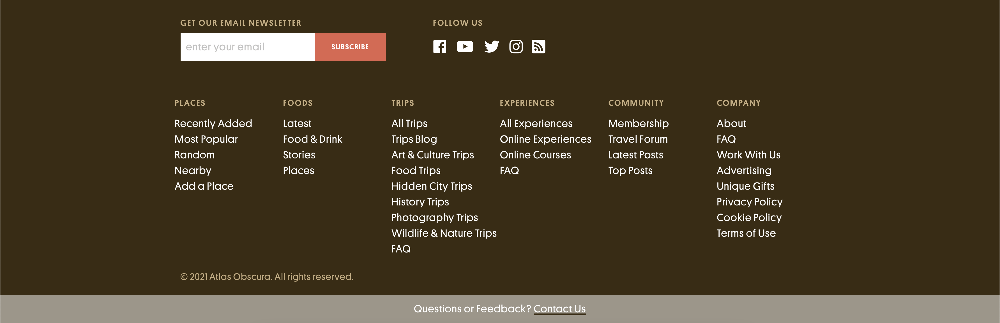
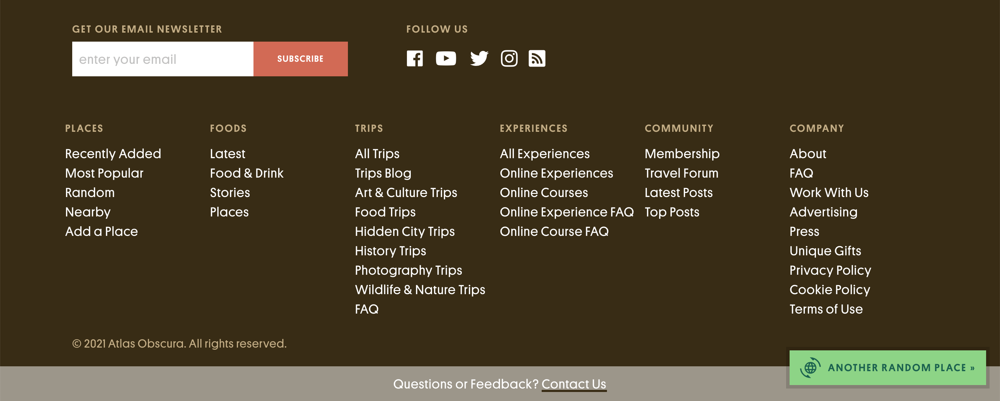
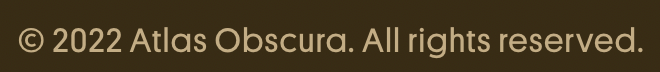
This year, YouTube and Atlas Obscura are celebrating Earth Day by visiting some of the world’s greatest natural wonders. For every breathtaking YouTube creator-led eco-excursion, an adjoining article will dig deeper into each marvelous location or subject.
There’s no replacing this magnificent planet—jump in to find 11 more reasons to cherish our one-of-a-kind home.
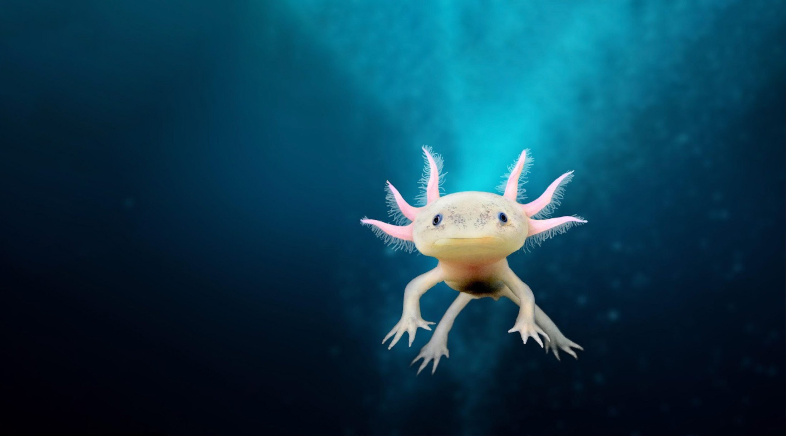
We only get one planet—let’s make this the year we make a difference.
NON-FUNGIBLE PLANET Overview
In 2022, YouTube and Atlas Obscura are continuing our shared commitment to sustainability. We’ve partnered to put some of YouTube’s biggest creators in the driver’s seat as they guide us to eleven places of natural wonder in celebration of our incredible planet.
These creator-led adventures will span unthinkable heights and unexplored caverns, jaw-dropping waterfalls and one-of-a-kind deserts, otherworldly gardens and ecosystems rippling with life to reveal the marvels of our natural world. But it’s not all fun and games—this is adventure with a purpose.
Each eco-excursion will be tied to an NGO fighting to protect the vital habitats, landscapes, and waterways we’ve visited. We only get one planet, and while it’s important to appreciate its hidden nooks and crannies, it’s even better when we can help ensure they remain intact for future generations.
This year, we invite you to open your eyes, expect the unexpected, and join us in the obligation we all share to the place we call home. Happy Earth Day!
An expedition by foot, bridge, and canoe to visit the world’s only floating national park.
MostlySane x
Loktak Lake, India
Jina Kim explores an array of plant life on a deserted island turned botanical paradise.
Its Jina Kim x
Oedo Botania, South Korea
Lasizwe zip-lines through mountains and spelunks for crystals in the oldest cave system on earth.
Lasizwe Dambuza x
Sudwala Caves, South Africa
A rugged hike deep into the Brazilian jungle leads to the largest cave mouth in the world.
Manual Do Mundo x
Casa de Pedro Grotto, Brazil
A thought-provoking day-trip to a mysterious megalith in the French countryside.
Cyrus North x
Carnac Stones, France
This slippery expedition ventures to one of the wettest places on earth, home to living root bridges.
Slayy Point x
The Root Bridges, India
Jack explores a world of botanical beauty packed into sprawling London gardens.
Jack Harries x
Kew Gardens
Mark Vins joins a wildlife expert on a midnight trek deep into an untouched Ecuadorian rainforest.
Mark Vins x
Amazon Rainforest, Ecuador
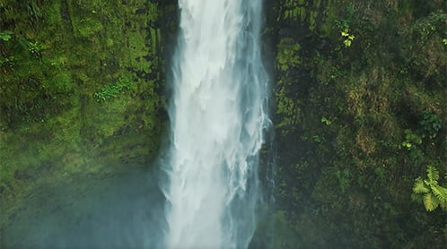
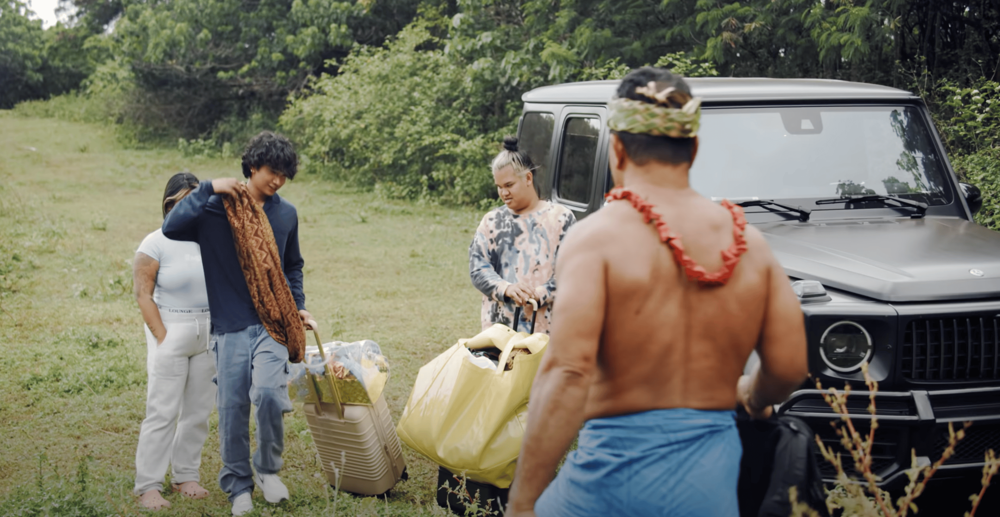
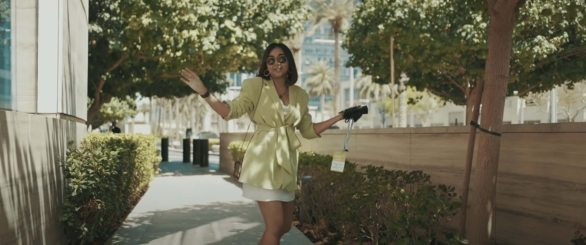
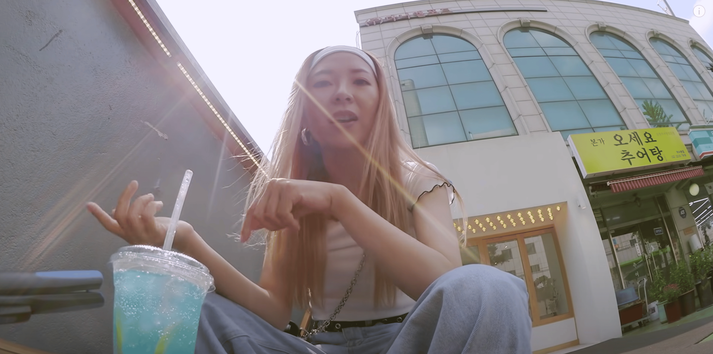
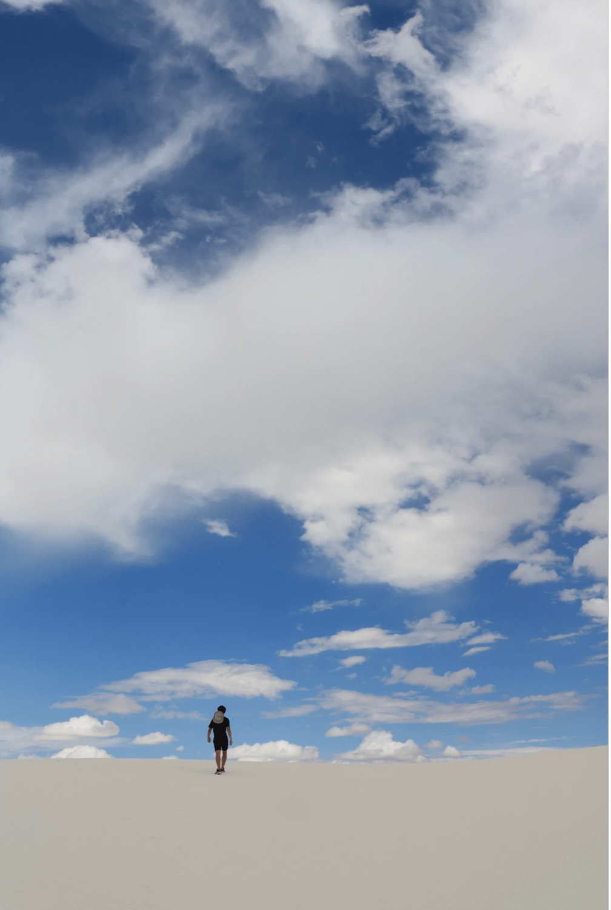
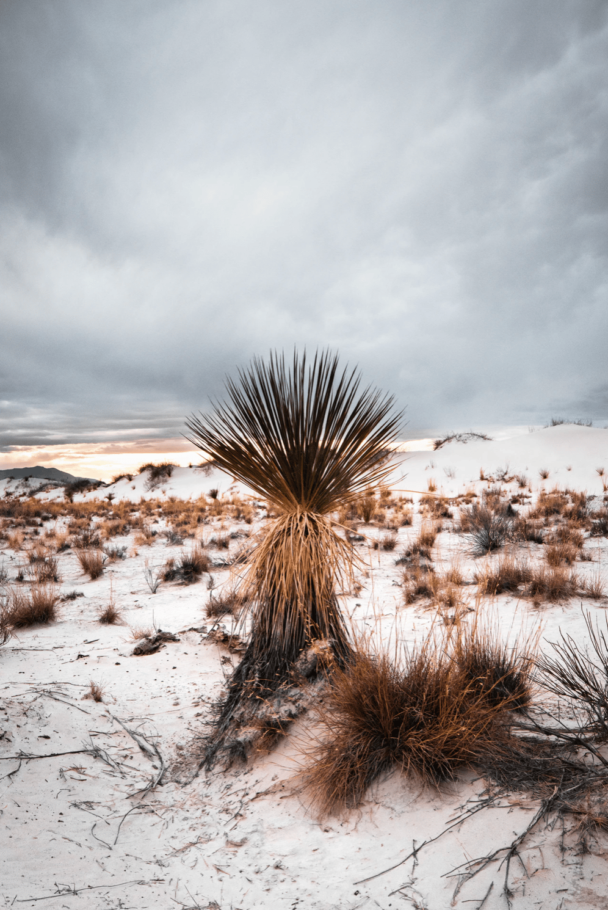
Join Bretman Rock on a verdant hike through a tropical rainforest to a 442-foot waterfall.
close
Bretman Rock x
‘Akaka Falls, Hawaii
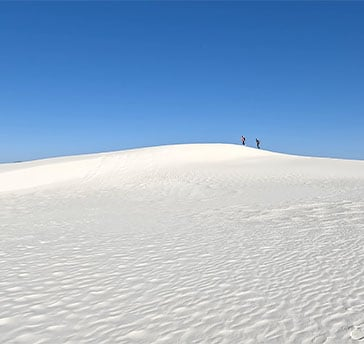
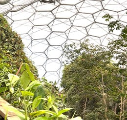
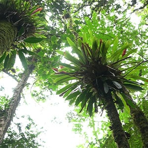
This moon-white dune field is home to geological oddities and endemic species.
AsapSCIENCE x
White Sands, New Mexico
Julia sketches her way through plant-packed global garden biomes in Southwest England.
Julia Gisella x
Eden Project, England
Welcome to Non-Fungible Planet
Trailer
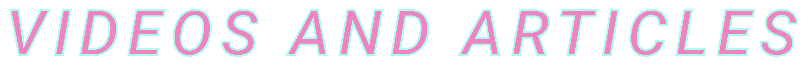
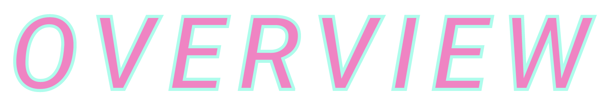
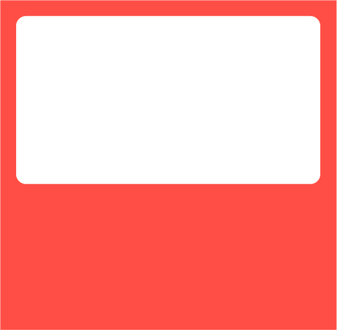
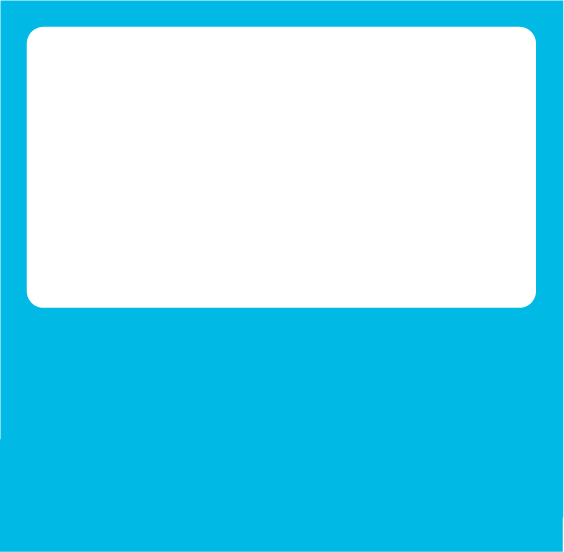
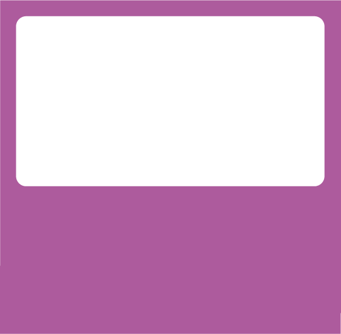
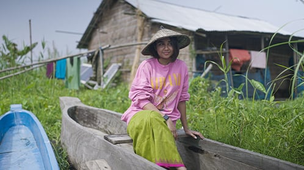
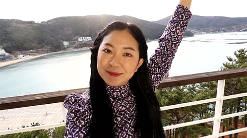
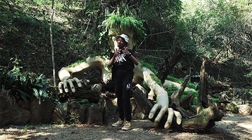
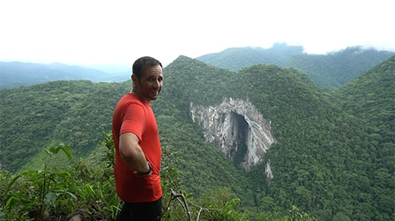
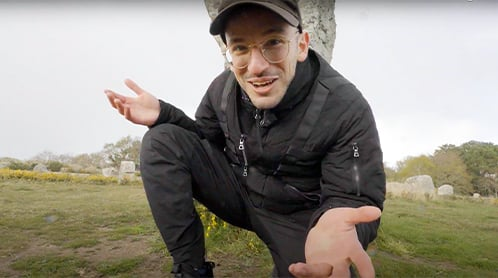
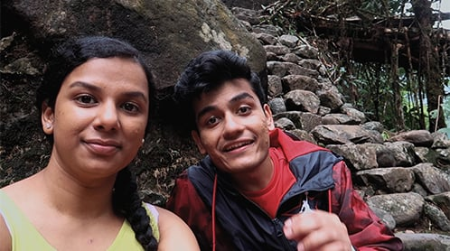
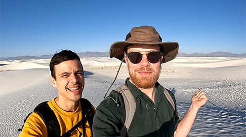
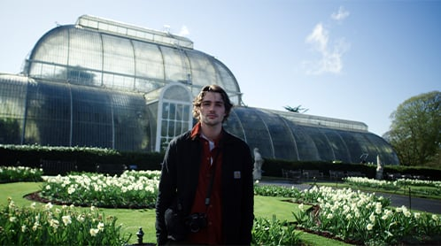
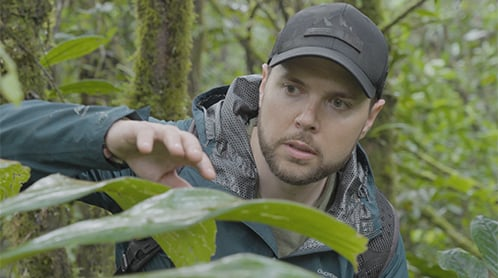
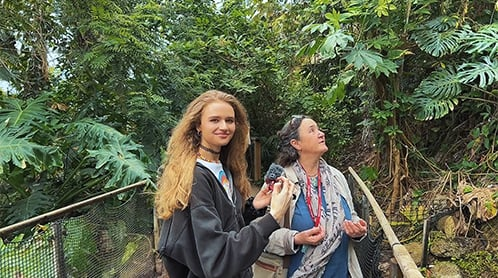